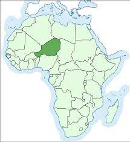
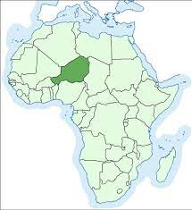

Istorija
Remains thought to belong to Nigersaurus were first discovered during a 1965–1972 expedition to the Republic of Niger led by French paleontologist Philippe Taquet, and first mentioned in a paper published in 1976.[1][2] Although a common genus, the dinosaur had been poorly known until more material of other individuals was discovered during expeditions led by American palaeontologist Paul Sereno in 1997 and 2000. The limited understanding of the genus was the result of poor preservation of its remains, which arises from the delicate and highly pneumatic construction (filled with air spaces connected to air sacs) of the skull and skeleton, in turn causing disarticulation of the fossils. Some of the skull fossils were so thin that a strong light beam was visible through them. Therefore, no intact skulls or articulated skeletons have been found, and these specimens represent the most complete known rebbachisaurid remains.
Nigersaurus was named and described in more detail by Sereno and colleagues only in 1999, based on remains of newly found individuals. The same article also named Jobaria, another sauropod from Niger. The genus name Nigersaurus ("Niger reptile") is a reference to the country where it was discovered, and the specific name taqueti honours Taquet, who was the first to organise large-scale palaeontological expeditions to Niger.[4] The holotype specimen (MNN GAD512) consists of a partial skull and neck. Limb material and a scapula (shoulder blade) found nearby were also referred to the same specimen. These fossils are housed at the National Museum of Niger.
Drzava poticanja
 
